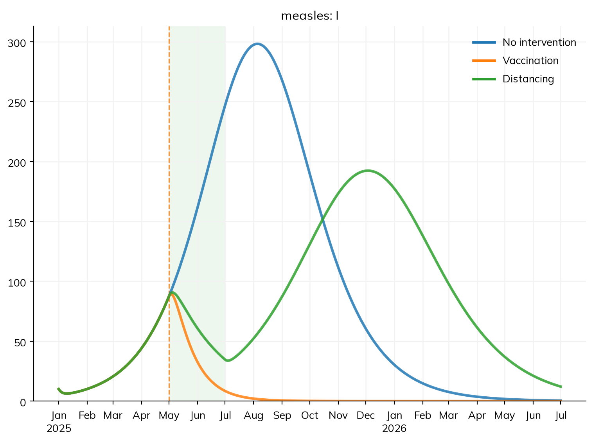
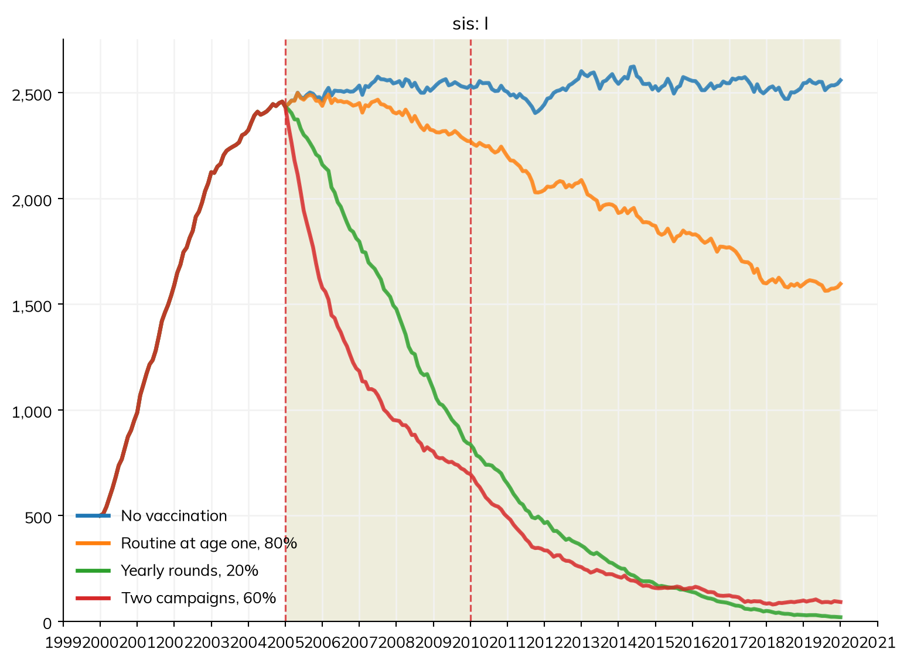
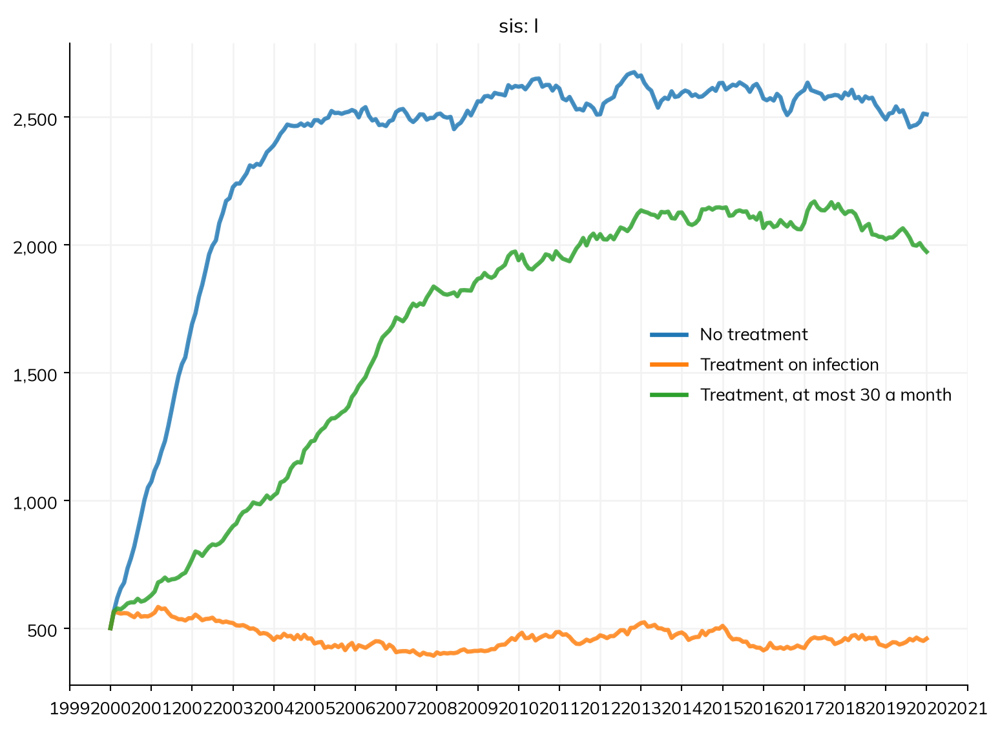
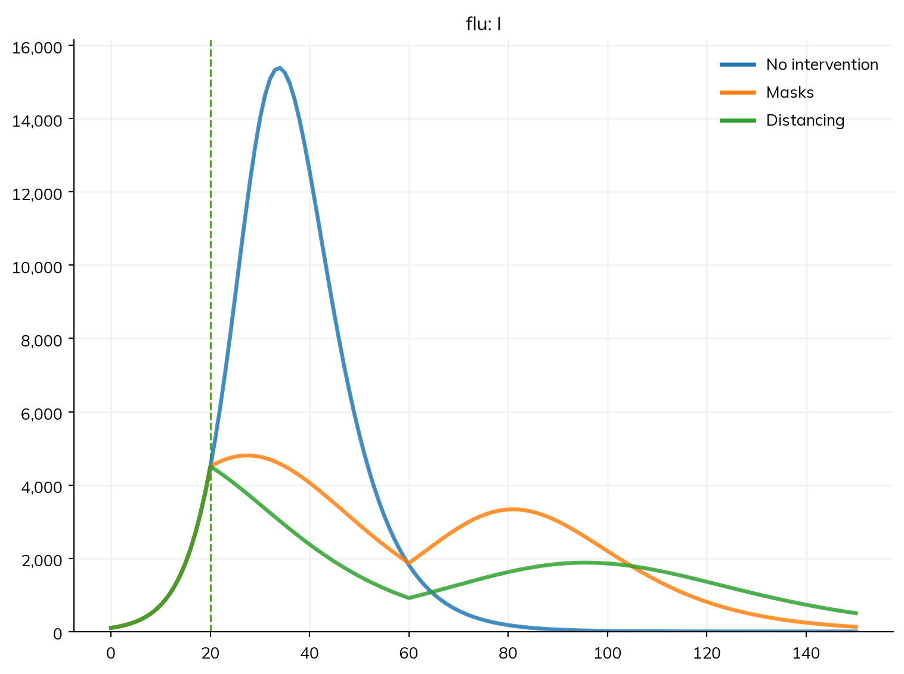
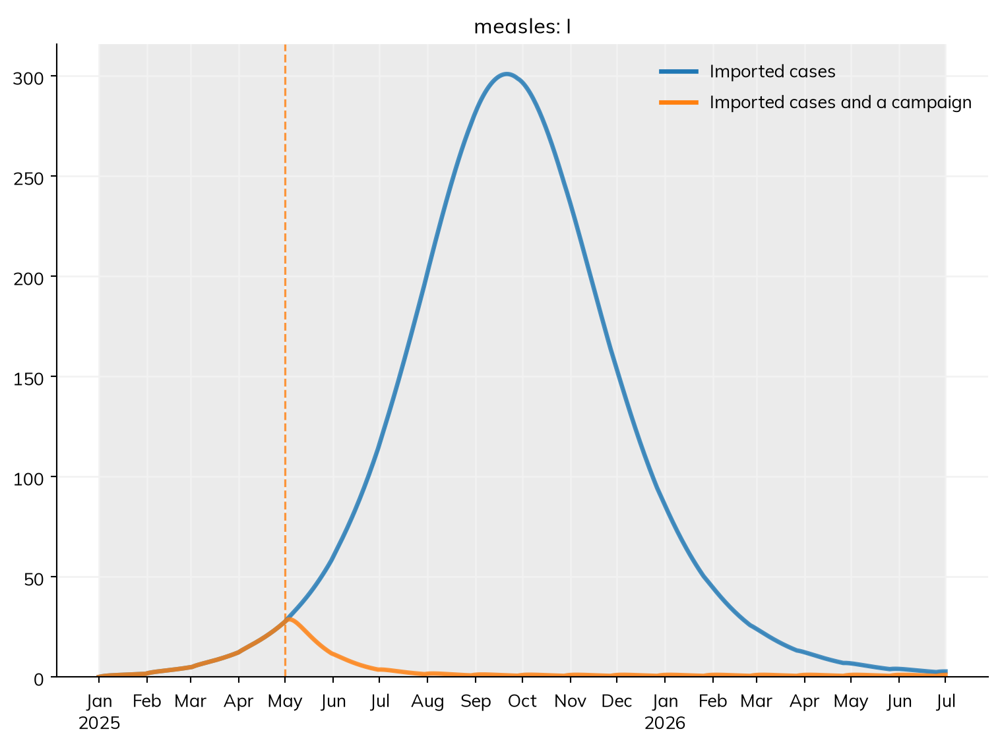
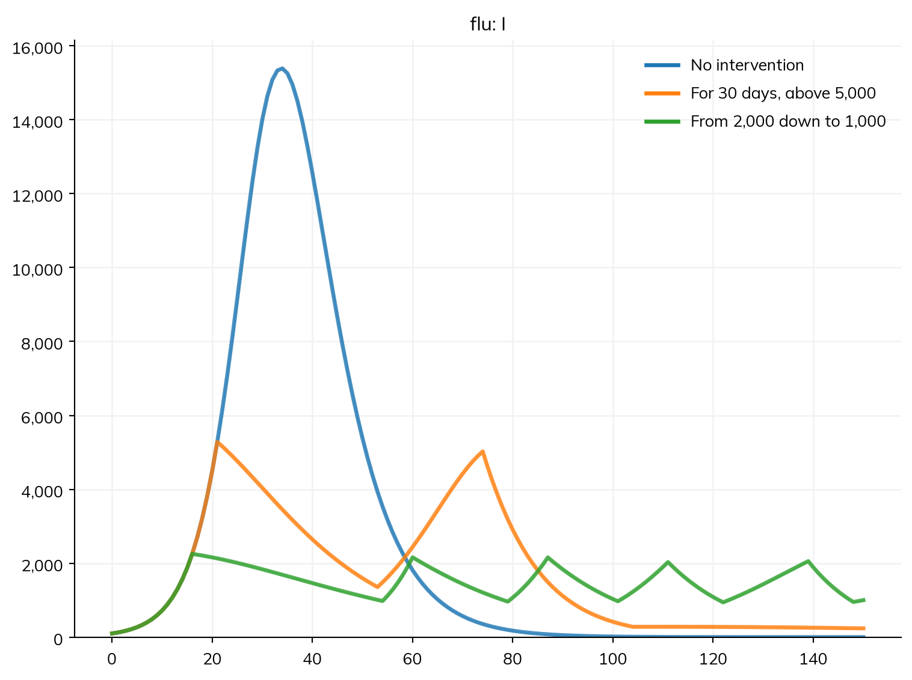
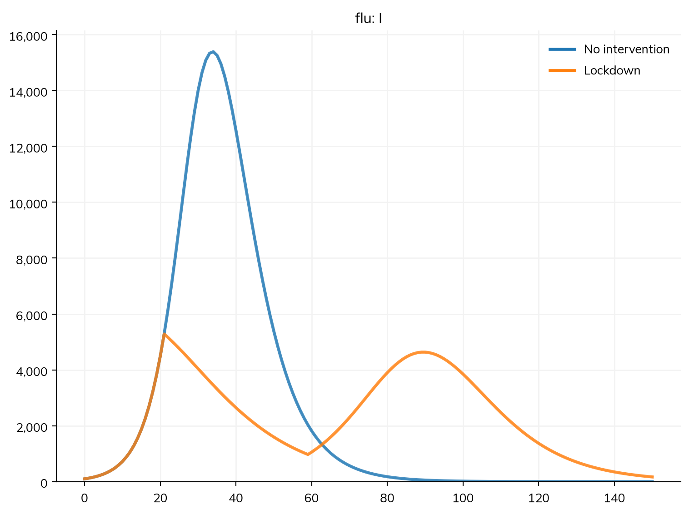

An intervention is anything done to change the course of an epidemic. Most are one of two kinds. Some deliver a product to people: a vaccine, a test, or a drug, given to the people who are eligible, at given times or when something happens to them. Others change a quantity in the model, giving nothing to anyone: masks, distancing, and school closures change transmission, faster diagnosis shortens the time people are infectious. This page covers both: how products are delivered (who, when, and how many), and how parameters are changed (when, for whom, and how changes combine), and then interventions written as code, for anything else.
What a vaccine, test, or treatment does is on Products, and what interventions cost on Costs. The same ss.modify() that changes parameters is how one module changes another, on Connectors. The tutorial T5 – Interventions and scenarios compares interventions against measles, and A4 – Interventions uses deliveries that need agents; running the scenarios of a comparison is on Scenarios.
Here are the two kinds side by side, against an outbreak of measles in a town of 100,000 people, 90% of whom are immune (an SEIR model with an R0 of about 15, latent for 10 days and infectious for 8, as on Products): a vaccination campaign that reaches 80% of people on 1 May, three months before the outbreak would peak, and distancing that halves transmission from 1 May to 1 July:
import numpy as npimport starsim as ssS, E, I, R = ss.states('S E I R')infection = S >> E @1.9*I # β = 1.9 per dayprogression = E >> I @ ss.days(10) # Latent for 10 days on averagerecovery = I >> R @ ss.days(8) # Infectious for 8 days on averagemeasles = ss.Disease(infection, progression, recovery, init=dict(R=0.9), init_n=dict(I=10)) # 90% immune, 10 infectiousvaccination = ss.vaccinate(efficacy=0.93, leaky=False, coverage=0.8, at='2025-05-01') # Delivers a productdistancing = ss.modify(measles.pars.beta, multiply=0.5, start='2025-05-01', stop='2025-07-01') # Changes a parameterkw =dict(total_pop=100_000, start='2025-01-01', stop='2026-07-01', verbose=0)msim = ss.parallel({'No intervention': ss.Sim(measles, **kw),'Vaccination': ss.Sim(measles, interventions=vaccination, **kw),'Distancing': ss.Sim(measles, interventions=distancing, **kw),})msim.plot('measles.I')msim.summarize().loc['measles_infection']

value
scenario
No intervention
5954.755004
Vaccination
764.382924
Distancing
5465.911878
The campaign (with an all-or-nothing vaccine, leaky=False, as measles vaccine roughly is, protecting 93% of those vaccinated) protects those it reaches for good, and cuts the outbreak from about 6,000 infections to under 800. Distancing stops the outbreak growing while it lasts, since halving transmission brings the number each case infects below one; but when it ends, the people it protected are still susceptible, and the outbreak resumes, peaking in the winter instead of the summer, and infecting nearly as many in the end. The run is 18 months long so that this shows: a run that ended in December would credit distancing with infections it only delayed.
Delivering products
A delivery says who can receive the product, when, and how many. There is one delivery for each kind of product, ss.vaccinate(), ss.screen(), and ss.treat(), and each takes the product, or the product’s own keywords, as well as how it is delivered. A delivery takes its name from the variable it is assigned to, and has results of its own: the number delivered on each step, the number eligible, and the coverage reached. Its keywords are the same for every product:
Keyword
Meaning
start=, stop=
When delivery starts and stops: dates, or times in the sim’s unit
at=
Deliver in rounds at these times (a campaign)
interval=
Deliver in rounds this far apart, between start and stop
at_age=
Routine delivery to people as they reach an age, e.g. at_age=ss.months(9)
where=
Who can receive it: a condition, or a function of the sim
who=
Who receives it: an event (such as screening.positive or sis.infection), a condition, or both, joined with &
coverage=
The share of eligible people reached
capacity=
The number that can be delivered (per round, per step, or as a rate)
priority=
Who is served first when capacity runs short
queue=
Whether those not served wait their turn (agents only)
delay=
The time from a trigger to delivery (agents only)
trace=
Deliver to the contacts of those selected, on a network (agents only)
when=
Deliver only on steps where a function of the timeline returns True, e.g. lambda t: t.ti % 7 == 0
deliver=
A function of the sim that returns who receives it, instead of where=, coverage=, and the rounds
disease=
The disease the product acts on, if there is more than one
The product is the first argument (ss.vaccinate(vaccine, ...), or what=), or is made from the product’s own keywords. A delivery can also move people between states with no product (move=; see below). The appendices list every delivery, every keyword, and every event and condition a delivery can be given.
The examples in this section use a curable infection with no lasting immunity, over 20 years, as an SIS model run as agents (since some of what follows depends on each person’s own history):
S, I = ss.states('S I')infection = S >> I @ ss.peryear(2)*I # β = 2 per yearrecovery = I >> S @ ss.years(1) # Infected for a year on average, then susceptible againsis = ss.Disease(infection, recovery, init_prev=0.1)kw =dict(n_agents=5000, start=2000, stop=2020, dt=ss.months(1), verbose=0)
Rounds and routine delivery
With at= or interval=, delivery is in rounds: in each round, every eligible person is offered the product once. With neither, delivery is routine: each person is offered it once, at the first step on which they are eligible. at_age= is routine delivery as people reach an age: at_age=ss.months(9) vaccinates children as they turn 9 months old, and not everyone older on the first day. Routine delivery needs people to become eligible over time, by being born, aging, or something happening to them: in a population with no births, routine delivery to everyone is a single round on its first step. So these examples add births and deaths, of 3% a year, and compare routine vaccination of children as they turn one, yearly rounds that reach 20% of everyone, and two campaigns:
kw_births =dict(kw, demographics=[ss.birth(rate=ss.peryear(0.03)), ss.death(rate=ss.peryear(0.03))])routine = ss.vaccinate(efficacy=0.8, coverage=0.8, at_age=ss.years(1), start='2005') # Once per child, as they turn oneyearly = ss.vaccinate(efficacy=0.8, coverage=0.2, interval=ss.years(1), start='2005') # A round every yearcampaign = ss.vaccinate(efficacy=0.8, coverage=0.6, at=['2005', '2010']) # Two roundsscenarios = {'No vaccination': ss.Sim(sis, **kw_births),'Routine at age one, 80%': ss.Sim(sis, interventions=routine, **kw_births),'Yearly rounds, 20%': ss.Sim(sis, interventions=yearly, **kw_births),'Two campaigns, 60%': ss.Sim(sis, interventions=campaign, **kw_births),}msim = ss.parallel(scenarios)msim.plot('sis.I')for sim in msim.sims[1:]: delivery = sim.interventions[0]print(sim.label, '- doses:', round(sim.results[delivery.name].delivered.sum()))

Routine at age one, 80% - doses: 1738
Yearly rounds, 20% - doses: 5792
Two campaigns, 60% - doses: 4460
Routine vaccination of children acts slowly, since it reaches only each new birth cohort (about 3% of people a year); rounds of everyone protect much of the population at once, for more doses. Which is realistic depends on the program: routine childhood vaccination is the usual way of reaching each new cohort, and campaigns the way to reach those it missed.
As agents, each person has an age, so at_age= can be any age. As compartments, people have only an age group, and reach an age by aging from the group below it into the one it starts, so at_age= needs age groups with an edge at that age; otherwise it is an error (it never runs the model as agents instead). To compare several ages of delivery with the same compartments, give fine age groups once, with an edge at each age to try. The age at which to give the first dose of measles vaccine (MCV1) is a trade-off: maternal antibodies protect infants for their first months, but also stop the vaccine from working, so a dose at 6 months protects only about 60% of infants, at 9 months about 85%, and at 12 months or later over 90%; the later the dose, the longer infants go unprotected once their maternal antibodies wane. Here maternal immunity (M) lasts 6 months on average, and 80% of infants are vaccinated at each age, over 30 years in a population of a million:
M, S, E, I, R = ss.states('M S E I R')measles = ss.Disease(M, S, E, I, R, infection = S >> E @ ss.peryear(700)*I, # R0 of about 15 progression = E >> I @ ss.days(10), recovery = I >> R @ ss.days(8), waning = M >> S @ ss.months(6), # Maternal immunity, for 6 months on average births = ss.birth(M, rate=ss.peryear(0.03)), init =dict(I=0.001, R=0.85), name ='measles',)measles.stratify(age=[0, 0.25, 0.5, 0.75, 1, 1.25, 1.5, 5, 15]) # Edges every 3 months up to 18 monthsprotected = {6: 0.6, 9: 0.85, 12: 0.93, 15: 0.95} # The share of infants protected by a dose at each age, in monthssims = {}for months, share in protected.items(): mcv1 = ss.vaccinate(efficacy=share, leaky=False, coverage=0.8, at_age=ss.months(months), name='mcv1') sims[f'At {months} months'] = ss.Sim(measles, interventions=mcv1, total_pop=1e6, start=2000, stop=2030, dt=ss.weeks(1), verbose=0)msim = ss.parallel(sims)for label in sims:print(label, '- infections over 30 years:', round(msim.sims[label].results.measles.infection.sum()))
At 6 months - infections over 30 years: 769375
At 9 months - infections over 30 years: 490108
At 12 months - infections over 30 years: 443106
At 15 months - infections over 30 years: 446996
Here a dose at 6 months, which protects too few, does worst, a dose at 9 months better, and doses at 12 and 15 months best, by about the same: in this model, the gain in the share protected outweighs the infections of infants before they are vaccinated. Where measles circulates intensely among infants, the balance shifts towards earlier doses, which is why WHO recommends MCV1 at 9 months where measles is common, and at 12 to 15 months where it is rare. With 80% coverage, measles is not eliminated at any age, and comes back in epidemics every few years as susceptible children accumulate.
Coverage and capacity
coverage=0.7 is a share of the eligible people. A typed rate or probability, such as coverage=ss.perday(0.1), is the chance of being reached over the step (or over the round, with interval=), and routine delivery then offers it at every step to those eligible: a rate of seeking care, for example. capacity= is a number available: a bare number is per round for campaigns (or per step, for delivery on events or by a function), and a rate, such as ss.peryear(500), is per unit time, which routine delivery needs. When fewer are available than people who would receive one, those who do are chosen at random, unless priority= says who comes first (e.g. priority=ss.ppl.age, the oldest first). Given together, coverage is applied first, and capacity caps the result:
limited = ss.vaccinate(efficacy=0.8, coverage=0.6, at=['2005', '2010'], capacity=500) # At most 500 doses a roundsim = ss.Sim(sis, interventions=limited, **kw)sim.run()print('Doses delivered:', sim.results.limited.delivered.sum())
Doses delivered: 1000.0
priority= can also be a list of conditions, served in order (priority=[sis.I, ss.ppl.age >= 65]: everyone infected first, then those 65 and over), a score, highest first (priority=-hiv.cd4, the lowest CD4 count first), or a list of conditions and scores, each breaking the ties of the ones before ([due, ss.ppl.age]: those due first, and among them the oldest); other ties are broken at random.
With queue=True, those not served for lack of capacity wait, longest first, until they are served or are no longer eligible; a duration, such as queue=ss.months(6), limits the wait, and those still waiting at the end of it are the delivery’s outcome never_ran (an event, and a result: the people lost to follow-up for lack of capacity).
Who is eligible
where= says who can receive the product. It is a condition on people or on the states of a module, written before the sim exists, such as ss.ppl.age < 15 (people under 15), sis.I (people infected), or a combination with &, |, and ~ (and, or, not). A condition is not worked out when it is written, but each time it is needed, in the sim it runs in, so the same condition works in every copy of a sim. Anything else is a function of the sim, returning a boolean array or the UIDs of people:
Children vaccinated: 1067.0
Adults vaccinated: 3408.0
Each of these deliveries makes its own vaccine. The first is named vaccine; since that name is taken, the second is named after its delivery, adults_product.
Delivery when something happens
An event in where= delivers to the people something has just happened to, instead of on a schedule: a transition (the people who went through it on this step), or the outcome of another delivery. A transition can also be given by its path, where='sis.infection'. Here half of people are treated when they are infected, with no limit, or with up to 30 treatments a month:
unlimited = ss.treat(cure=0.9, where=sis.infection, coverage=0.5, name='on_infection')limited = ss.treat(cure=0.9, where=sis.infection, coverage=0.5, capacity=30, name='on_infection')msim = ss.parallel({'No treatment': ss.Sim(sis, **kw),'Treatment on infection': ss.Sim(sis, interventions=unlimited, **kw),'Treatment, at most 30 a month': ss.Sim(sis, interventions=limited, **kw),})msim.plot('sis.I')

With no limit, treating half of the people soon after they are infected keeps prevalence at under a fifth of its level without treatment. With at most 30 treatments a month, a little fewer than are needed even at the start, infections outgrow what the program can treat, and prevalence rises, more slowly than without treatment, to nearly its level without it: a capacity a little short of the need early on lets an epidemic grow far beyond it.
A condition can also be read on someone’s mother: ss.mother(cond, born=True) holds for a person whose mother meets cond. Each event remembers, per person, whether it ever happened (.ever), how often (.count), and how long ago (.since). Here newborns are tested if their mother tested positive at antenatal care within the past year (this SIS model has no transmission from mother to child, so the newborns tested are infected only by chance; a model of mother-to-child transmission, such as the congenital infections on Maternal, newborn, and child health, is where this matters):
As agents, every delivery keeps the memory of its events (who it reached, and each outcome), so it can be read after a run (and during it, delivery.reached() gives the UIDs of the people it reached on this step): sim.interventions.screening.ever.uids is everyone ever screened, and (sim.interventions.screening.positive.since <= ss.years(1)).uids everyone positive within the past year.
trace= is contact tracing: it delivers to the contacts, on a network, of the people that the event in who= selects. A network with memory= reaches recent past partners too (see Contact networks).
Delivery by a function
When who, when, and how many depend on each other (“treat the 200 oldest people who are infected”), one function says it. It is called every step (within start and stop, if given), and returns the UIDs of the people who receive the product on that step; capacity= may still cap it:
import numpy as npdef oldest_infected(sim):""" The 200 oldest people who are infected """ infected = sim.diseases.sis.I.uids order = np.argsort(sim.people.age[infected])return infected[order[-200:]]targeted = ss.treat(cure=0.9, deliver=oldest_infected, start='2005')sim = ss.Sim(sis, interventions=targeted, **kw)sim.run()sim.plot('sis')

when= is a condition on time, a function of the timeline that returns True or False, and delivers only on steps where it is True. A function of the sim goes in where=, e.g. once prevalence passes a threshold (see below).
Delivery without a product
ss.Delivery() is the delivery that the others are made from, and with move= it moves the people it reaches between states, with no product. It takes every keyword above, and runs under every solver. Here measles is brought into the town of the first example from outside, by two infections a month (move=S >> E, with capacity=2 per round), and the campaign of the first example is a move of the susceptible people it protects (80% reached, of whom 93% are protected) to the recovered state:
S, E, I, R = ss.states('S E I R')infection = S >> E @1.9*Iprogression = E >> I @ ss.days(10)recovery = I >> R @ ss.days(8)measles = ss.Disease(infection, progression, recovery, init=dict(R=0.9), name='measles') # Nobody infected at the startimports = ss.Delivery(move=S >> E, capacity=2, interval=ss.days(30)) # Two susceptible people infected each monthcampaign = ss.Delivery(move=S >> R, coverage=0.8*0.93, at='2025-05-01') # Protection as a move between stateskw_town =dict(total_pop=100_000, start='2025-01-01', stop='2026-07-01', verbose=0)msim = ss.parallel({'Imported cases': ss.Sim(measles, interventions=imports, **kw_town),'Imported cases and a campaign': ss.Sim(measles, interventions=[imports, campaign], **kw_town),})msim.plot('measles.I')

With imports, the outbreak is not a single event: after the campaign, imported cases go on arriving, but each infects too few others for an outbreak to take off. The other forms of a delivery with no product:
move=dict(vaccinated=True) moves people along a stratification of the model (to a level), and move=dict(risk=('low', 'high')) from one level to another, e.g. a campaign that leaves a mark, or a program that changes people’s risk group (see Stratification).
strain= gives the strain people arrive with in a move into an infected state: ss.Delivery(move=S >> E, strain='alpha', at=['2021-01-01'], capacity=20) brings a new strain in on a date; move=DS >> RIF changes the strain people carry, e.g. to a drug-resistant one (see Diseases).
increment='doses' adds one to a counter for each person reached (with the model stratified by doses=[0, 1, 2, 3]), and dict(doses=2) adds two.
With no product, move, or increment, a delivery is a step people attend, such as a clinic visit: it is an event (who attended), which several products can follow with who=visit, so that they are given at the same visit.
Changing parameters
Masks and distancing
Here is a flu-like epidemic in a town of 100,000, with β = 0.4 per day and an infectious period of 5 days (R0 = 2), and two policies: masks worn from day 20 to day 60, which cut transmission by 40%, and distancing that halves transmission from day 20 and then eases to 80% of its usual level from day 60:
import starsim as ssS, I, R = ss.states('S I R')infection = S >> I @0.4*I # β = 0.4 per dayrecovery = I >> R @ ss.days(5) # Infectious for 5 days on averageflu = ss.Disease(infection, recovery, init_prev=0.001)masks = ss.modify(flu.pars.beta, multiply=0.6, start=ss.days(20), stop=ss.days(60))distancing = ss.modify(flu.pars.beta, multiply=ss.timeseries({ss.days(20): 0.5, ss.days(60): 0.8}), start=ss.days(20))kw =dict(total_pop=100_000, stop=ss.days(150), verbose=0)scenarios = {'No intervention': ss.Sim(flu, **kw),'Masks': ss.Sim(flu, interventions=masks, **kw),'Distancing': ss.Sim(flu, interventions=distancing, **kw),}msim = ss.parallel(scenarios)msim.plot('flu.I')

flu.pars.beta is the β of the transmission, which a declared disease names beta. Masks delay the epidemic, but once they come off, most of it still happens; distancing, which never fully ends, cuts it by more:
msim.summarize().loc['flu_infection']
value
scenario
No intervention
79615.377937
Masks
65736.554255
Distancing
49626.920011
Changes at given times: ss.timeseries()
ss.modify(target, multiply=ss.timeseries({t1: x1, t2: x2}), start=t1) multiplies a quantity by each value from its time until the next; before start=, the quantity has its own value. Each multiplier is relative to the quantity’s own value, not to the one before. set= gives values instead of multipliers, and one change needs no series: ss.modify(flu.pars.beta, set=0.25, start=ss.days(20)). The times are dates in a sim with dates ('2025-03-01'), durations since the start (ss.days(20)), or numbers in the sim’s unit.
ss.modify(target, multiply=...) changes a quantity for as long as it applies: always, between start= and stop=, on the steps a condition on time says so (when=), or where a condition holds (where=), of people, of the population, or a function of the sim. It takes exactly one of:
Keyword
What it does
multiply=
Multiplies the quantity
efficacy=
Removes a share of the risk: the same as multiply=1 - efficacy, for protection such as condoms
add=
Adds to the quantity (parameters only; and an inflow from ss.null, to which it adds an amount per unit time from outside the model, e.g. ss.modify(typhoid.shedding, add=ss.perday(4e6)))
set=
Replaces the quantity (parameters only)
and any of:
Keyword
Meaning
start=, stop=
When it applies (by default, always)
where=
Who it applies to: a condition, or a function of the sim (by default, everyone)
when=
A condition on time: a function of the timeline that returns True on the steps it applies
hold=
Once where= or when= selects someone, it stays on for them for at least this long
until=
Once where= selects someone, it stays on for them until this condition holds
share=
With multiply= or efficacy=, the share of acts (or contacts) it applies to, e.g. condom use in 30% of acts; with route=, as agents, a function of the network giving a share for each partnership, e.g. share=lambda net: net.edges.condoms
route=
For a change to transmission, the network or networks it applies on (by default, all)
The amount can itself vary: multiply= takes anything a parameter takes, such as ss.seasonal() or ss.timeseries() (see Parameters).
What can be changed
The target of a modifier is any named quantity in the model:
Target
Example
What it changes
A parameter
flu.pars.beta
The parameter, for everyone it applies to
A transition
flu.recovery
The transition’s rate (or its probability, for a branch with p=)
Susceptibility or infectiousness
flu.rel_sus, flu.rel_trans
Each person’s relative chance of infection, or of infecting others (multiply only)
A network or contact layer
school, from ss.contacts('Kenya', layer=[...])
The contacts on it
Any of these by name
'flu.pars.beta', 'school.pars.n_contacts'
The same, written as a path
Here faster diagnosis from day 30 halves the time that people stay infectious, by doubling the rate of recovery, and susceptibility is halved for people aged 65 and over in an age-structured version of the model:
Closing schools is a modifier on the school layer of a contact matrix: see Population data.
Who it applies to
where= is a condition on people or on the states of modules, written before the sim exists: ss.ppl.age >= 65, flu.I, or a combination with &, |, and ~ (and, or, not), such as (ss.ppl.age >= 65) & ~flu.R. A condition is worked out each time it is needed, in the sim it runs in, so the same condition works in every copy of a sim made by ss.parallel() or by calibration. Anything else is a function of the sim, returning a boolean array or the UIDs of people: where=lambda sim: sim.people.age >= 65. A condition on a property of people, such as age, can be run as compartments only if the model is stratified by that property, as above; otherwise the model runs as agents.
Changes triggered by the epidemic
A rule such as “close schools when cases pass a threshold” is a function of the sim, given as where=, which returns True on the steps it applies. It can read any result up to the start of the step (sim.ti - 1, since this step’s results aren’t written yet). It has no memory: the modifier is on exactly when the function says so, so a bare threshold switches on and off as the epidemic crosses it. hold= adds the simplest memory: once on, it stays on for at least that long. Here transmission is halved for at least 30 days whenever more than 5,000 people are infectious:
A condition on a result can also be written with the result itself, which works out the condition for each place (or other group) on its own. Here each of two towns halves its transmission for at least 14 days once its cases over a week pass 200 per 100,000 people:
towns = ss.geo.geography(names=['North', 'South'], pop=[50_000, 50_000], x=[0, 20], y=[0, 0])S, I, R = ss.states('S I R')infection = S >> I @0.4*Irecovery = I >> R @ ss.days(5)flu_towns = ss.Disease(infection, recovery, init_n=dict(I=ss.by(patch=[10, 0])))flu_towns.stratify(patch=towns, mobility=ss.geo.gravity(away=0.001))weekly = flu_towns.infection.incidence(over=ss.days(7), by='patch') # New infections over the past week, as a share of each townlocal = ss.modify(flu_towns.pars.beta, multiply=0.5, where=weekly >200e-5, hold=ss.days(14))sim = ss.Sim(flu_towns, interventions=local, stop=ss.days(150), verbose=0)sim.run()sim.results.flu_towns.I.by('patch').plot()
Each town’s measures keep its epidemic near the threshold. A lockdown that starts at one level and ends at a lower one, which stops it switching on and off around a single threshold, takes until=. Here it starts when 2% of people are infectious and ends when 1% are:
Any other rule that remembers what it did is a module written as code: a subclass of ss.Intervention whose step() decides, and an ss.modify() whose where= is a function of the sim that reads its decision, so that the base value is never overwritten. See below.
How changes combine
A modifier never overwrites the quantity it changes. The quantity keeps its own base value, and the modifiers active now are applied on top of it to give the effective value, which the model uses:
effective = (the set value, if any, otherwise the base) × every multiplier + every addition
that is, set, then multiply, then add, whatever order the modifiers were given in. Two 40% reductions give a 64% reduction (0.6 × 0.6 = 0.36), the usual assumption for independent effects; the efficacies of products (such as a vaccine’s) are multipliers of the same kind. Since the base is never changed, nothing has to be undone when a modifier stops applying, and modifiers from several sources combine instead of erasing each other. The array itself holds the base: as agents, the effective value of each person, with the modifiers and products that apply now, is dis.current_value(), e.g. sim.diseases.flu_age.current_value('rel_sus'), which is what to record or check (rel_sus itself gives the base values). sim.what_modifies() lists the modifiers on a quantity, with their conditions:
A modifier can be given to the sim as an intervention (interventions=) or as a connector (connectors=). The two do the same thing, and differ only in where they run in each step; by convention, policies go in interventions= and interactions that are part of the biology (one disease raising the risk of another) in connectors= (see Connectors).
Under compartments and agents
Changes work the same under every solver. As agents, a change to contacts (such as multiply=0.5 on a layer) means each contact happens with that probability in a step; in a compartmental run, the contacts are scaled. where= on a property of people needs either agents, or a model stratified by that property, and a model with neither runs as agents.
Writing an intervention as code
Deliveries and modifiers cover the common cases. Anything else is a module written as code: a subclass of ss.Intervention with a step() method, which runs on every step and can read and change anything in the sim (see Custom modules, and the tutorial T9 – Custom modules, which writes one for isolating measles cases).
An intervention written as code is best kept to deciding, leaving the change itself to ss.modify(), so that the base value is never overwritten and the change combines with others. Here is a lockdown with memory: it starts when more than 5,000 people are infectious, as the reactive measure above does, but is lifted only once fewer than 1,000 are. The intervention keeps the decision, and records it as a result; the modifier reads it:
class Lockdown(ss.Intervention):""" Lock down when more than `on` people are infectious, and lift it only once fewer than `off` are """def__init__(self, on=5000, off=1000, **kwargs):super().__init__()self.define_pars(on=on, off=off)self.update_pars(**kwargs)self.active =Falsereturndef init_results(self):super().init_results()self.define_results(ss.Result('active', label='Lockdown in place'))returndef step(self): infectious =self.sim.results.flu.I[self.sim.ti -1] ifself.sim.ti >0else0# As of the last stepifnotself.active and infectious >self.pars.on:self.active =Trueelifself.active and infectious <self.pars.off:self.active =Falseself.results.active[self.ti] =self.activereturnlockdown = Lockdown()effect = ss.modify(flu.pars.beta, multiply=0.5, where=lambda sim: sim.interventions.lockdown.active)msim = ss.parallel({'No intervention': ss.Sim(flu, **kw),'Lockdown': ss.Sim(flu, interventions=[lockdown, effect], **kw),})msim.plot('flu.I')print('Days of lockdown:', msim.sims[1].results.lockdown.active.sum())

Days of lockdown: 38.0
The lockdown stays in place for 38 days, until fewer than 1,000 people are infectious, rather than switching on and off around a single threshold. Once it is lifted, a second wave follows, since most people are still susceptible: the usual result of a measure that ends before immunity has built up, and a reason to run scenarios until their epidemics are over. An intervention that reads results only, as this one does, runs under every solver; one that acts on particular people (e.g. through their states) runs as agents. A product whose effect needs code is a subclass of ss.Product instead: see Products.
Comparing scenarios
An intervention’s effect is the difference between a run with it and a run without, so every comparison needs a baseline that shares everything else: the same population, parameters, and, for a stochastic model, random numbers. Make the scenarios from the same model and settings, as on this page (or from one sim, with sim.new(interventions=...)), and run them together with ss.parallel(). Some things to keep in mind:
Run long enough. An intervention that delays infections can look like one that prevents them if the run ends too soon; run until the epidemics of all scenarios are over, or long enough to see the endemic level.
Run more than once. For a model run as agents or as a stochastic model, the difference between two single runs is partly chance; run each scenario several times (n_runs=), with the same seeds for each, and compare the differences run by run (msim.diff()). See Scenarios.
Count the same thing. Compare the same results in the same units across scenarios: infections in people, not agents, and over the same period.
Pitfalls
Routine is once per person. Routine delivery offers each person the product once, when they are first eligible; a share of people reached every year is delivery in yearly rounds (interval=ss.years(1)), or routine delivery with a typed coverage (coverage=ss.probperyear(0.5)), a chance at every step for as long as people are eligible.
Coverage is of the eligible.coverage=0.8 with where=ss.ppl.age < 5 reaches 80% of children under 5, not 80% of everyone.
Routine delivery needs a rate of capacity. A bare number as capacity= is per round or per step; routine delivery has neither, so it needs a rate, e.g. ss.peryear(500).
and, or, and not don’t combine conditions. Use &, |, and ~, with brackets: (ss.ppl.age > 15) & ~sis.I.
A multiplier is relative to the base.ss.modify(beta, multiply=ss.timeseries({20: 0.5, 60: 0.8}), start=20) sets transmission to 80% of its base from day 60, not to 80% of the 50% before.
Susceptibility and infectiousness only multiply.add= and set= are for parameters; on rel_sus and rel_trans, use multiply=.
A trigger with no memory flickers.where= on a threshold switches the modifier on and off as the quantity crosses it; give hold= for a measure that stays in place once begun.
Read results from before this step. A function given as where= runs before the step’s results are written; read [sim.ti - 1], not [sim.ti].
A function made in a loop sees the loop’s last value. Python reads a variable when a function runs, not when it is made, so every where=lambda sim: sim.people.age >= lower made in for lower in [0, 15]: uses 15. Use a condition (where=ss.ppl.age >= lower), which keeps the value it was written with, or pass the value in (lambda sim, lower=lower: ...).
import inspect, reimport pandas as pddef keywords(cls):""" Each keyword in the Args of a class's docstring (and its bases'), with its meaning up to the first semicolon outside brackets """ rows = {}for base in inspect.getmro(cls):if base in [ss.Module, ss.Product, ss.Intervention, ss.Connector]:break args = (inspect.getdoc(base) or'').partition('Args:\n')[2].split('\n\n')[0]for key, desc in re.findall(r'^(\w+)\([^)]*\): (.*(?:\n{8,}.*)*)', args, flags=re.M): desc =' '.join(desc.split()) depth =0for i, char inenumerate(desc): depth += (char in'([') - (char in')]')if char ==';'and depth ==0: desc = desc[:i]breakif key !='kwargs': rows.setdefault(key, desc)return pd.DataFrame(rows.items(), columns=['Keyword', 'Meaning']).set_index('Keyword')pd.set_option('display.max_colwidth', None)pd.concat({'ss.Delivery': keywords(ss.Delivery), 'ss.modify': keywords(ss.modify)})
Meaning
Keyword
ss.Delivery
what
what is delivered: an `ss.Vaccine`, `ss.Diagnostic`, or `ss.Treatment`, or a product written as code (an `ss.Product` with an `administer()`), which any of them can give (also the first argument)
who
who receives it, which must choose people or compartments: a condition on them (e.g. `ss.ppl.age < 5`), an event (e.g. `sir.infection`, `screening.positive`, or a delivery), or a combination with `&` and `|` (an event `|` a condition raises, being neither triggered nor routine)
move
instead of a product, a move between two states for the people reached, written with the states, e.g. `move=S >> V` (a one-off campaign), or from any of several (`move=U + P + W >> P`: a re-dose, which restarts the time in `P` of those already there)
strain
with `move=` into a state where people carry a strain (e.g. `move=S >> E`), the strain they arrive with: the import of a strain on a date, e.g. `ss.Delivery(move=S >> E, strain='alpha', at=['2021-01-01'], capacity=20)`
increment
instead of a product, a counter that goes up for the people reached: its name, which adds 1 (`increment='doses'`), or a dict of the amount for each (`dict(doses=2)`)
at_age
routine delivery to people as they reach this age (a bare number is in years), e.g. `at_age=ss.months(9)`
start
when delivery starts, within the sim (default: the start of the sim)
stop
when delivery stops (default: never)
at
deliver in rounds at these times (a campaign), each within the sim: dates, or numbers, read as `start` is
interval
deliver in rounds this far apart, between `start` and `stop`
where
anything else it depends on, joined to who= with `&`: a condition on the population (e.g. `sir.I.n > 1000`), an event, which triggers it (e.g. `where=sir.infection`, or a transition by its path, `where='sir.infection'`, found when the sim is initialized), a condition on people, or a function of the sim
coverage
the fraction of eligible people reached
capacity
the number that can be delivered: a number per round (or per step, for delivery on events or by a function), or a rate (e.g. `ss.peryear(50_000)`), which routine delivery needs
priority
who is served first when not everyone can be (under `capacity=`): a condition, or a list of them served in order (all of the first, then the second)
queue
what happens to people not served for lack of capacity (agents only): None (the default), they are lost
delay
for a triggered step, the time from the trigger to delivery (agents only): a duration, or a distribution of durations, drawn per person (e.g. `ss.uniform(ss.months(1), ss.months(8))`). The people triggered receive it then if they are eligible then (who='s condition, and coverage=, are applied when it is due)
trace
contact tracing: deliver to the contacts, in this network (or these), of the people that the event in who= selects, instead of to them
when
deliver only on the steps where this function of the timeline returns True (e.g. `lambda t: t.ti % 7 == 0`)
deliver
a function of the sim returning who receives it this step (UIDs, or a number per group in a compartmental run)
disease
the disease the product acts on (default: the only one)
name
the name
label
a human-readable name
ss.modify
target
the quantity to change (for a modifier that is a member of a disease, its own, e.g. `beta`, `recovery`, or `'rel_trans'`): a parameter (`sir.pars.beta`), a transition (`sir.recovery`, which scales its rate, or its probability if it is a branch with `p=`), `sir.rel_sus` or `sir.rel_trans`, a parameter of any module written as code, or the path of any of these as a string (`'sir.pars.beta'`)
multiply
multiply the quantity by this
add
add this to the quantity: a parameter, or an inflow (a transition from `ss.null`, e.g. CFUs shed into a reservoir), to which it adds an amount per unit time from outside the model
set
replace the quantity with this (a parameter only)
efficacy
for protection such as a condom or a needle program, the share of the risk it removes: the same as `multiply=1 - efficacy` (give one of them)
share
with `multiply=` or `efficacy=`, the share of acts (or, on a route without acts, of contacts) it acts on: the hazard is multiplied by `1 − share·(1 − multiply)`, exactly, since hazards add
route
for a modifier of a transmission, the network or networks (by name) it applies on
where
who it applies to: a condition (e.g. `sir.vaccinated`), a condition on a count (e.g. `sir.I.n > 1000`, worked out at each step; in compartments, as part of the rates where it can be, so the run stays in the kernels), or a function of the sim (default: everyone)
start
when the modifier starts to apply, within the sim (default: the start of the sim)
stop
when it stops applying (default: never)
when
a condition on time alone: a function of the timeline returning True on the steps it applies (e.g. `lambda t: t.ti % 7 == 0`), which can be read before the run
until
once `where=` selects someone, the modifier stays on for them until this holds, as for a lockdown that starts at one level of cases and ends at a lower one (with `where=`, not with `hold=`)
hold
once `where=` (or `when=`) selects someone, the modifier stays on for them for at least this long, as a rule that is lifted only after a while
name
the name of the modifier
Appendix: who and when
The events a delivery can be triggered by (in who= or where=), and the conditions it can be given (in who=, where=, or priority=, and in a modifier’s where=). Conditions combine with &, |, and ~, with brackets.
Kind
Examples
Who it is
A transition
sis.infection, 'sis.infection', a branch tb.progression.to(tb.active)
The people who went through it on this step
Entering or leaving a set of states
(sis.I \| sis.R).enter, ss.state('ng.C').enter
The people who entered (or left) it from outside it on this step
Whatever it returns: a boolean array, UIDs, or one value for everyone
A function of the timeline (when=)
lambda t: t.ti % 7 == 0
Everyone, on the steps when it returns True
And the ways to time a delivery: start= and stop= (an interval of time), at= (rounds at given times), interval= (rounds this far apart), at_age= (as people reach an age), when= (on the steps a function of time selects), delay= (after its trigger), and none of these (routine, as people become eligible).
Appendix: what needs agents
Deliveries and modifiers run under every solver, except for what follows each person’s own history or contacts. A model with any of these runs as agents, unless a solver is asked for, when it is an error that names the reason (see Solvers):
Feature
Why it needs agents
delay= on a delivery, or on a test
People wait from the trigger (or test) to delivery (or result)
queue=
People wait to be served
trace=
Only a network of agents knows who someone’s contacts are
.since and .count of an event (.ever runs under every solver)
Only agents keep the time and number of events per person
ss.mother()
Only agents know who someone’s mother is
disease=[...] with several diseases (a product keyed by the diseases runs under every solver)
Each person is tested or treated for each disease
A function of (sim, uids) in where=, coverage=, deliver=, or priority=
It reads particular people
Waning by a function of the time since delivery (an ss.box() runs under every solver)
Only agents keep the time since delivery
A product written as code (administer()), or an intervention that acts on particular people
It acts on agents
A condition on a property of people the model is not stratified by (e.g. ss.ppl.age in a model without age groups)